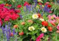

Seasonal plants customized for your space and delivered to your home!
Follow The Sun offers exterior container gardens that reflect your taste and thrive in your location to create the perfect container garden for you. Choose your plants from and extensive list of native species which can be accented with ornamentals for a little exotic spot where it's needed.
Jean will work with you to create the garden of your choosing given whatever size patio, deck or outdoor living space you have. Vegetables and fruit bearing trees make gorgeous container gardens --- so your garden can provide cut flowers to use indoors, herbs, vegetables and fruits. Lemon trees, swiss chard, cherry tomatoes are only a few of the plants available for selection. using whatever space you have.

Contact Me: Jean.Childress@gmail.com